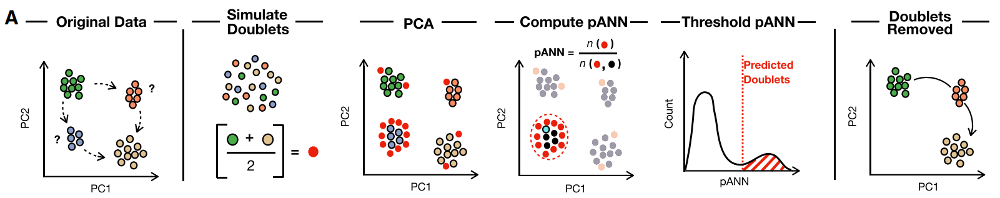
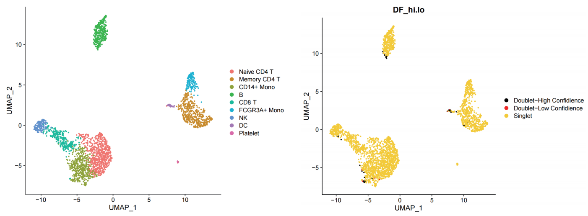

DoubletFinder：检测 scRNAseq 中双细胞的工具
参考链接
GitHub: https://github.com/chris-mcginnis-ucsf/DoubletFinder
DOI: https://doi.org/10.1016/j.cels.2019.03.003
Cite: McGinnis CS, Murrow LM, Gartner ZJ. DoubletFinder: Doublet Detection in Single-Cell RNA Sequencing Data Using Artificial Nearest Neighbors. Cell Syst 2019 Apr 24;8(4):329-337.e4.
DoubletFinder 原理
DoubletFinder 可以分为以下几个步骤:

- Original Data: 完成 Seurat 标准的聚类程序后，可能会存在一些中间状态的细胞 (图中？标注的蓝色和橙色细胞)，这些中间状态的细胞很可能就是双细胞。
- Simulate Doublets: DoubletFinder 会通过平均随机细胞对的基因表达谱，从现有的 scRNA-seq 数据中以确定的比例 (pN) 生成 artificial doublets (红色)。
- PCA: DoubletFinder 将生成的人工双细胞合并到原始数据中进行 PCA 降维。
- Compute pANN: DoubletFinder 检测 PC 空间中每个真实细胞的邻域大小 (pK) 内的邻近细胞 ，计算这些邻近细胞中人工双细胞的比率 (pANN)。
- Threshold pANN: DoubletFinder 将 pANN 值最高的前 n 个真实细胞预测为双细胞，n 值根据经验双细胞比率 (nExp) 参数指定。
- Doublets Removed: 在 Seurat 对象中将 DoubletFinder 标记的双细胞去除。
DoubletFinder 使用
DoubletFinder 使用以下参数:
- seu: 这是一个完整处理过的 Seurat 对象 (即，在 NormalizeData，FindVariableGenes，ScaleData，RunPCA，RunTSNE 全部运行之后)。
- PCs: 具有统计意义的主成分的数量，默认 PCs = 1:10 。
- pN: 定义生成人工双细胞的数目比例，默认 pN = 0.25，DoubletFinder 的性能受 pN 的影响较小。
- pK: 用于计算 pANN (proportion of artificial nearest neighbors) 的 PC 邻域大小。在数据分布中，BC (bimodality coefficient，双峰性系数) 用来衡量与单峰分布的偏离程度。DoubletFinder 通过 find.pK() 函数来计算 BC 值，BC 值最大时为最优 pK 值。
- nExp: 根据经验定义的双细胞的数目，参考 10X 平台的双细胞率，每 1000 个细胞双细胞比率增加 0.8% 。
使用示例：
1 | # 以Seurat官网的pbmc3k数据为例 |
DoubletFinder结果:
